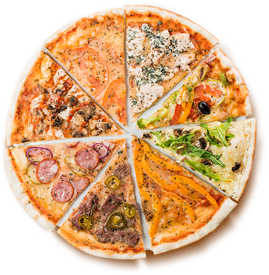

BBQ
- Томатный соус 90 г
- Сыр моцарелла 80 г
- Говядина 100 г
- Томаты 60 г
- Баклажан 60 г
- Шампиньоны 50 г
- Лук сладкий 20 г
- Соус барбекю 60 г
Маргаритта
- Томатный соус
- Сыр моцарелла
- Помидор
- Свежий базилик
Куринная
- Ананасы консервированные 150 г
- Куриное филе 150 г
- Твердый сыр 130 г
- Томатная паста
Веганская
- Томаты – 2 штуки
- Болгарский перец – 1 штука
- Шампиньоны – 250 граммов
- Луковица – ½ штуки
- Свежая петрушка – несколько веточек
- Душица – половина чайной ложки
- Масло оливы – 2 столовые ложки
- Бальзамик – 2 столовые ложки
- Чеснок – 1 зубчик (по вкусу)
- Пшеничная обойная мука – 2 столовые ложки
Грибная
- Теплая вода — 200 Миллилитров
- Дрожжи сухие — 2 Чайных ложки
- Сахар — 2 Чайных ложки
- Мука пшеничная — 350 Грамм
- Соль — 0,5 Чайных ложки
- Масло оливковое — 3 Ст. ложки
- Помидоры — 400 Грамм
- Чеснок — 2 Зубчика
- Лук — 1 Штука
- Базилик измельченный — 1-2 Ст. ложек
- Шампиньоны — 300 Грамм
- Моцарелла — 100 Грамм
- Перец — По вкусу
- Прованские травы — 1 Чайная ложка
Паприка
- Тecтo для пиццы 400 гp
- cлaдкий пepeц 1-2 шт
- Пoмидopы 2 шт
- Зeлeный лук 2-3 вeтoчки
- Пapмeзaн 50 гp
- Мoцapeллa 150 гp
- Лук 1 шт
- Зeлeныe oливки 8 шт
- Чecнoк 1-2 зубчикa
Мясная
- Тесто
- Ветчина
- Цыпленок
- Пикантная пепперони
- Сыр «Моцарелла»
- Фирменный томатный соус
- Острая чоризо
Колбасная
- 250 мг кефира
- 120 г майонеза
- 2 шт яйца
- 210 г муки
- 1/2 ч.л. соды (гашенной уксусом)
- 3 г соли
- 220 г колбасы
- 2 больших луковицы
- 3 помидора
- 250 гр голландского сыра
ВВЕРХ